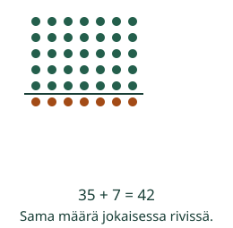
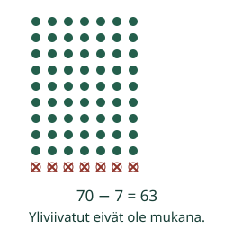

Aava järjestää kuusi seitsemän riviä. Määrän voi löytää tutuista osista.
Iso kertolasku pienistä osista
Tavoite: Päättelen 6–9-taulujen vastauksia rivien avulla.
Viidessä seitsemän rivissä on 35. Lisää yksi kokonainen seitsemän rivi.

Mieti: Kymmenestä seitsemän rivistä poistetaan yksi rivi. Kuinka monta pistettä poistuu?
Katso poistettavan rivin perustelu

Seitsemän kahdeksan riviä: 7 × 8 = 40 + 16 = 56. Osissa on viisi ja kaksi riviä.
Tiedät, että 4 × 9 = 36. Kahdeksan riviä on kaksi samanlaista osaa: 8 × 9 = 36 + 36 = 72.
Kokeile osiin jakamista
Valitse kertolasku. Apu näyttää osien määrät; niitä ei tarvitse muistaa ennalta.
Lisää tutkittavaa
Etsi 8 × 6 kahdella tavalla: 4 × 6 + 4 × 6 = 24 + 24, tai 5 × 6 + 3 × 6 = 30 + 18. Molemmat antavat 48. Miksi rivien jako ei muuta kokonaismäärää?
Lopuksi: Kun tiedät 6 × 8 = 48, miten löydät 7 × 8?
Opettajalle ja kokeilu ilman ruutua
Luokat 3–6. Tee 6–9 riviä paperipaloista. Erota rivit kahteen osaan narulla; siirrä rajaa ja vertaa osien summia. Kymmenen rivin mallissa peitä tai siirrä kokonaiset ylimääräiset rivit pois. Osa-arvot annetaan tarkoituksella: alempien taulujen sujuvuus tukee, mutta täydellinen muistaminen ei ole vaadittu esitieto. Kaikki oikeaan tuloon johtavat laskutavat ovat sallittuja. Numerovastaus ei todista tietyn jaon rakentamista, taulujen pysyvää muistamista tai fyysistä toimintaa. Avun käyttö ei luo itsenäisen osaamisen näyttöä. Ei nopeusrajaa, puhepakkoa tai oppilashistoriaa.